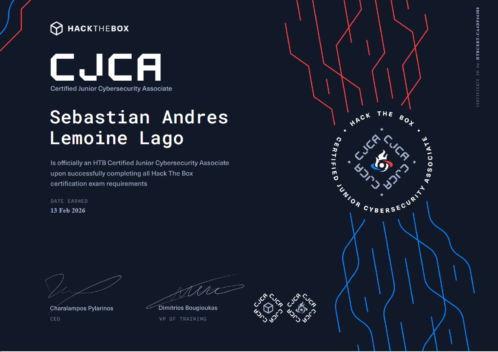

Blue Team | Security Analysis | Junior Cybersecurity Analyst
Hack The Box Certified Junior Cybersecurity Analyst (CJCA) es una certificación práctica orientada a validar las competencias necesarias para desempeñarse como analista de ciberseguridad de nivel inicial. A través de laboratorios basados en escenarios reales, desarrolla habilidades en investigación, análisis de sistemas, identificación de vulnerabilidades y comprensión de las técnicas, tácticas y procedimientos (TTPs) utilizados por los atacantes. Su enfoque combina fundamentos ofensivos y defensivos para fortalecer la capacidad de detección, análisis y respuesta ante incidentes de seguridad.
La certificación proporciona una base práctica para desempeñarse como SOC Analyst L1, permitiendo investigar alertas de seguridad, analizar eventos provenientes de sistemas Windows, Linux y redes, identificar indicadores de compromiso (IoCs), comprender el comportamiento de los atacantes mediante sus TTPs y apoyar el proceso de detección, análisis y escalamiento de incidentes utilizando una metodología estructurada.
Durante la preparación para la certificación completé prácticas repetitivas a lo largo del path oficial de Hack The Box, resolviendo múltiples laboratorios y máquinas diseñadas para reforzar los conceptos evaluados en el examen. Estas actividades incluyeron reconocimiento y enumeración, análisis de vulnerabilidades, seguridad web, Active Directory, sistemas Linux y Windows, investigación de incidentes y documentación técnica, permitiéndome desarrollar una metodología de trabajo estructurada y orientada a escenarios reales. En esta sección se presentan las evidencias, procedimientos y conclusiones obtenidas en cada laboratorio.

Certificación oficial obtenida como parte del desarrollo profesional en ciberseguridad.
La preparación para el CJCA marcó un cambio importante en mi formación, ya que me permitió pasar de los conceptos teóricos a escenarios prácticos donde fue necesario investigar, analizar y resolver problemas similares a los encontrados en entornos reales. Esta certificación fortaleció mi metodología de análisis, mi capacidad para comprender el comportamiento de los atacantes y mi criterio para investigar incidentes de seguridad, constituyendo una base sólida para desempeñarme como SOC Analyst L1 y continuar especializándome en detección de amenazas, DFIR y operaciones de Blue Team.